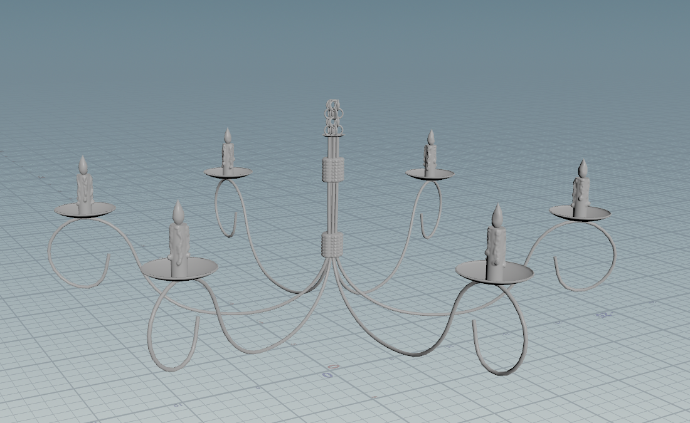

Welcome to my webpage. This was created using all skills learned in CGT 141 this semester. Above there are tabs to click on that will show projects I have created in various different courses in my academic career in Animation/VFX.
If there are any questions, you can contact me here.
CGT 116
CGT 116, also known as Geometric Modeling for Visualization and Communication, is an intro 3D modeling class. It was the first class I was put into when I had switched into Animation. Below is a link to my website I had to create for this class, along with a sketchfab link that holds all of my projects.
Sketchfab is a website that I put all of my finished projects into.
Said projects can be found here.
Here is a link to my website I had to create in CGT 116.
CGT 118
CGT 118, also known as Fundamentals of Imaging Technology, was one of the more fun classes I have taken. A little bit of coding as the beginning, but I was primarily being taught photoshop skills and different drawing techniques. Below are some images of different projects I completed throughout the class.
Processing
This is from the first assignment in the class, coded with Processing.
Photomerge
This image is my submission of the "photomerge" assignment, where you were to take 2+ separate images and seamlessly merge them into one.
Cartooning
This image is from the "cartooning" assignment, where you were to draw and color an image with fine lines and shading. I took inspiration from the show Samurai Jack.
Practical
This image is from the Lab Practical conducted late in the semester. You were to choose between a couple different assignments, this one was to give the car good shading and line details. The other options were to code a train in Processing, or correct an old photo to fix the cracks and white spots.
Final
This is the final project I made in this class. It's a recreation of Miles Morales from the Spiderverse movies.
CGT 123
CGT 123, also known as Animation Foundations, is an intro 2D animating class. I was tought various techniques on how to properly animate 2d scenes, with simple projects such as a hammer swing or a ball bounce. There was 1 3D project in this class, but other than that all assignments were 2D. Below are videos of my animations created in the class.
All 2D assignments were done on a Waycom tablet using Blender.
Ball Bounce
This is the first assignment done in the class, a 2D ball bounce. This assignment teaches you the squash and stretch technique when it comes to animating moving objects.
Hammer Down
This is the 2nd assignment in this class, called "Hammer Down". This assignment teaches you how to keep the same weight and composition of an object in an animation.
Walk Cycle
This is the 3rd assignment done in the class, a walk cycle. This gets you into how to get character movement down.
Sack Jump
This is the 4th assignment done in the class, a sack jump. This assignment teaches you how to make an inanimate object come to life.
3D Ball Bounce
This is the final assignment done in this class, and also the only 3D assignment done in this class. Made using Blender.
CGT 147
CGT 147, or Visual Effects Introduction, is an intro class for editing and camera techniques and both 3D and VFX modeling. The projectes in this class use a lot of procedural modeling in Houdini. At the time I am coding this webpage, I am also working on the final project for CGT 147 so I will not be supplying that here. But below are some images and videos of projects I have created in this class.
Skills 2
Skills 1 was just a screenshot of the Houdini application and some questions about Houdini, so the first actual project was skills 2.

This is the first actual project done in the class, a 3D model of a chandelier. At the time, I couldn't figure out how to use the rendering engine so I just took a screenshot of my model. I never ended up going back to get the final render.
Skills 3
This is the second project done in the class, and the first instance of using procedural modeling. If given the actual Houdini file, you could go in and change the height or width of the stairs, the height of the railing, or how many bars the railing has.
Skills 5
Skills 4 was just an introduction into using Pyro. The final render was just a still image essentially of what is seen in this skills project, so I did not include it.
This rendering is of the last project before we began work on the final project. This project introduced particles and further enchanced use of pyro.
At the time I am coding this project, I am still working on the final project for CGT 147, so that will not be included.
About Me
My name is Josh Hoyt, and I am currently a sophomore at Purdue University majoring in Animation/VFX. I grew up playing a ton of video games, which is partly what inspired me to choose this major. Hopefully, one day, I could work behind the scenes and help create a video game or movie.
Outside of school, some of my hobbies are photography, pickleball, watching sports, and playing video games. Below are some of my favorite pictures I have taken in the past.
This entire webpage was created for a final project in one of my classes, CGT 141. I have no prior experience coding, so this class at times was very challening for me. But the professor, Carlos, is incredible and is willing to work with you to help you figure things out. The TA's in lab are also incredible at teaching and helping out with the different projects. I have learned a lot, but am glad to finally be done with the class.
If you would like to get to know anything else about me, or have any other questions, you can find me here.
Contact
You could get in touch with me via the email(s) below, or via my phone number: